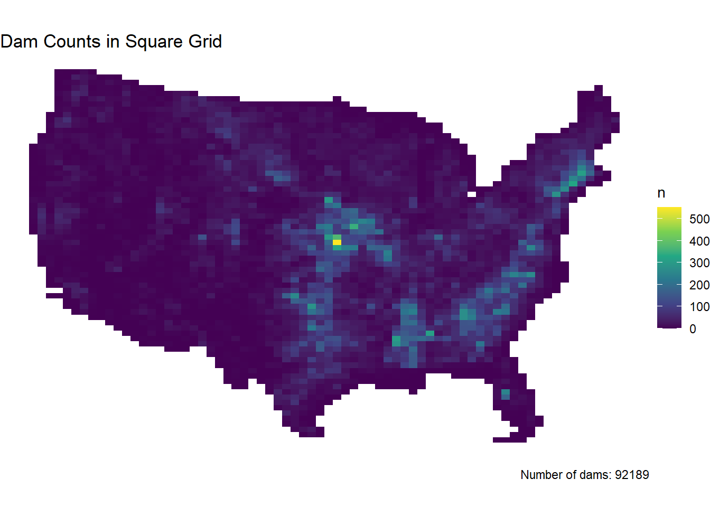
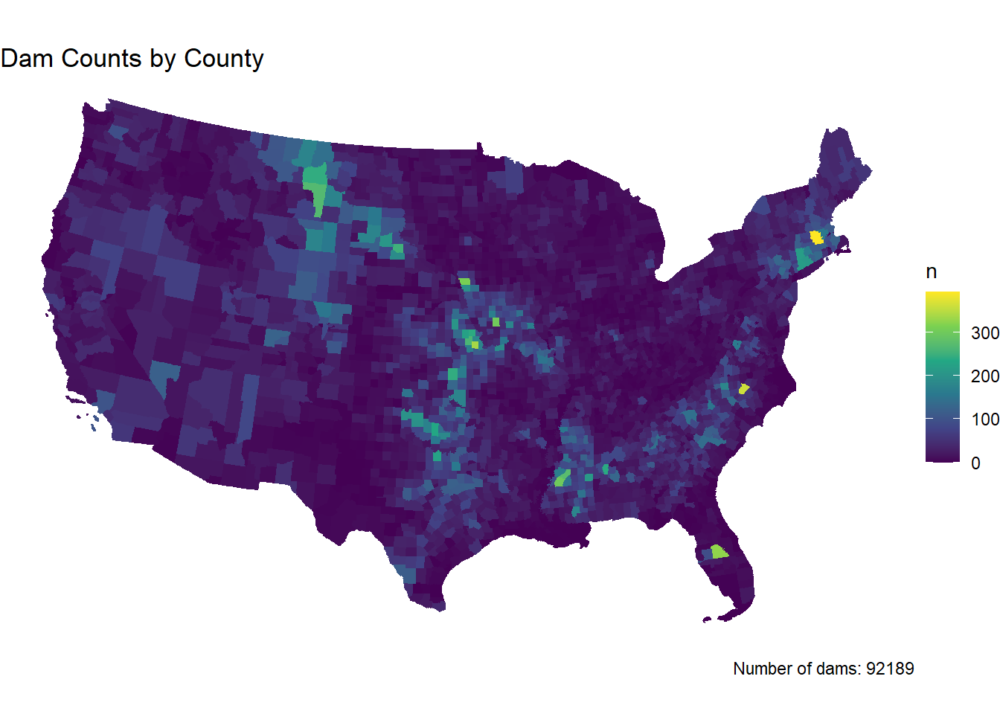
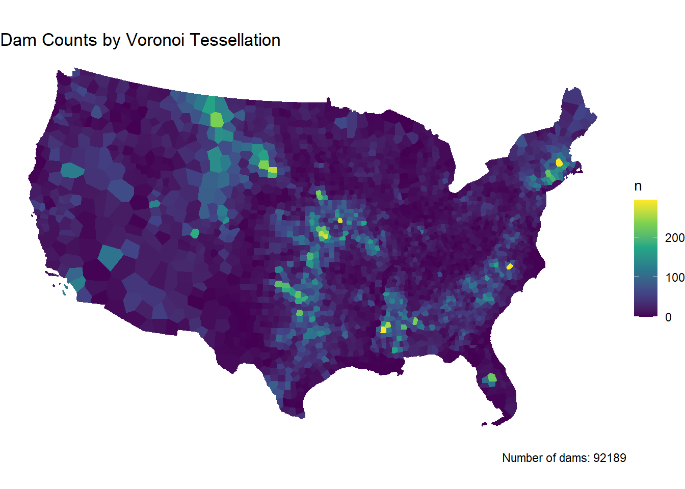
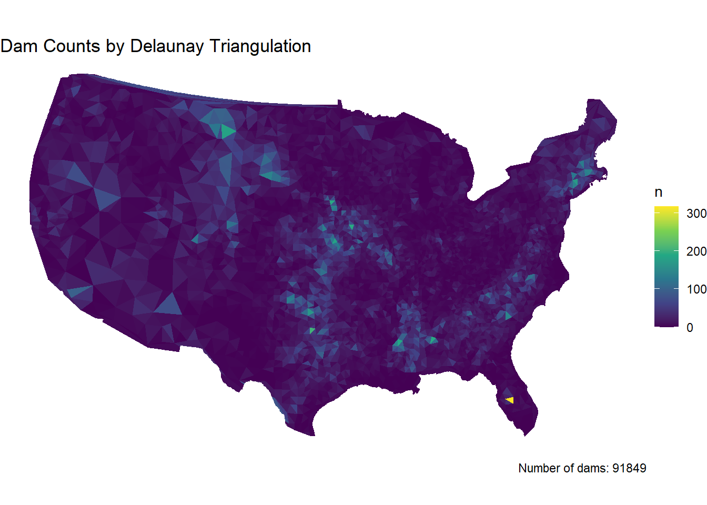
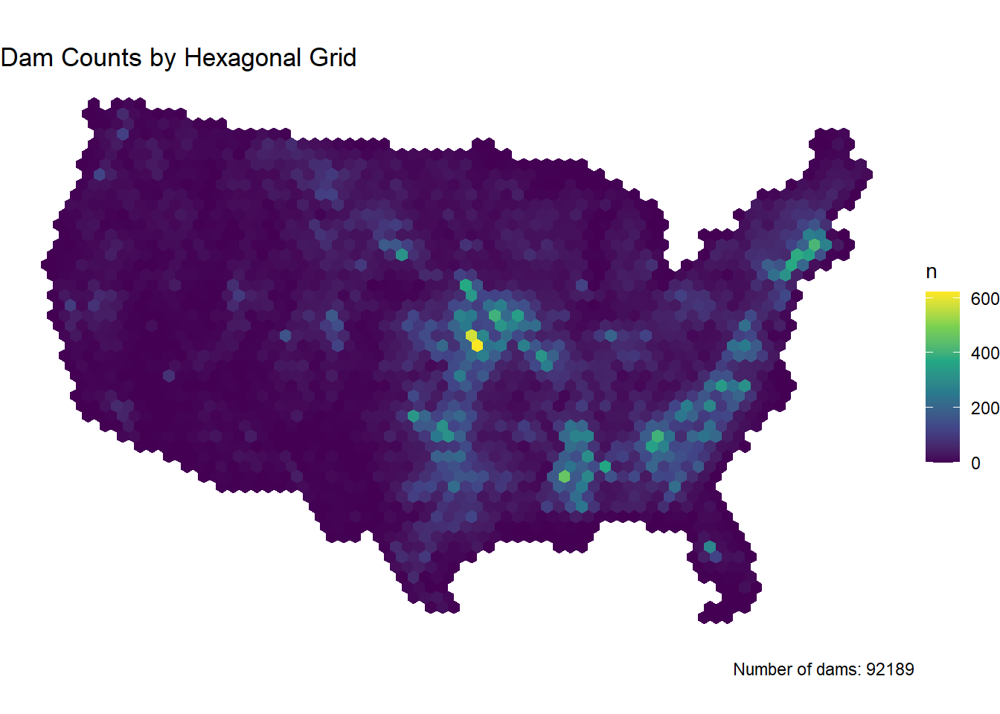
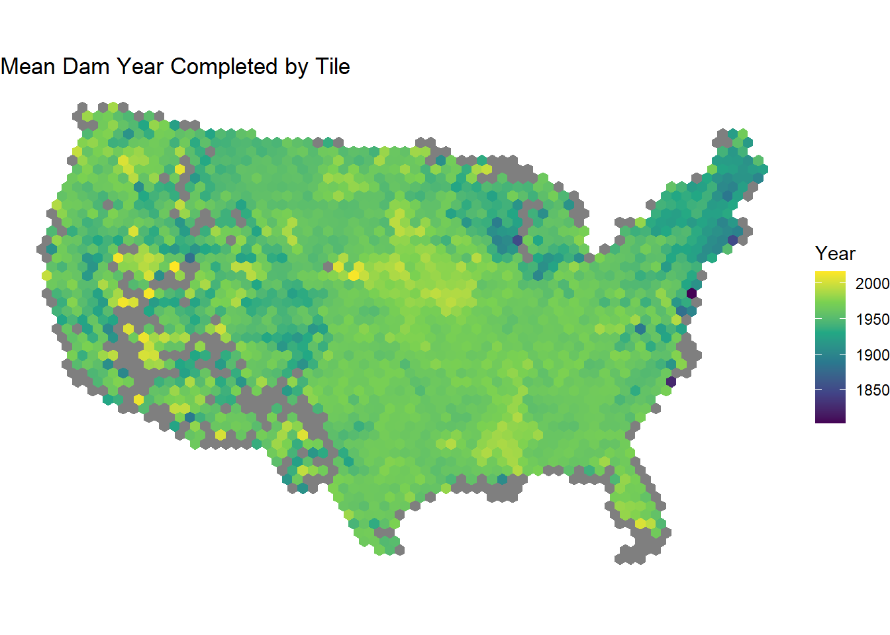
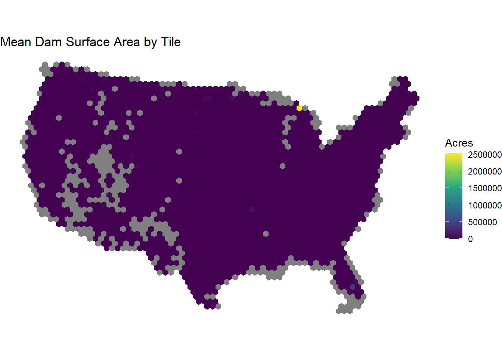
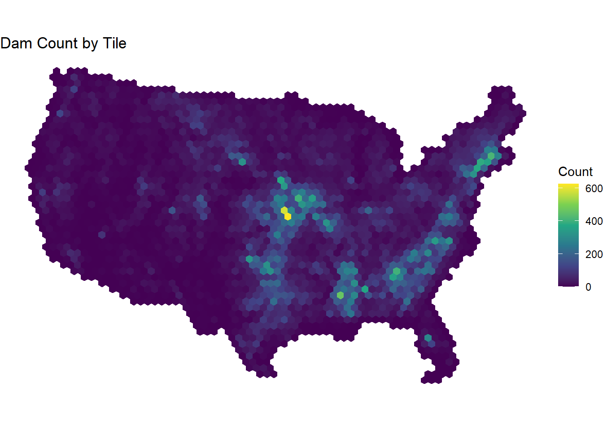
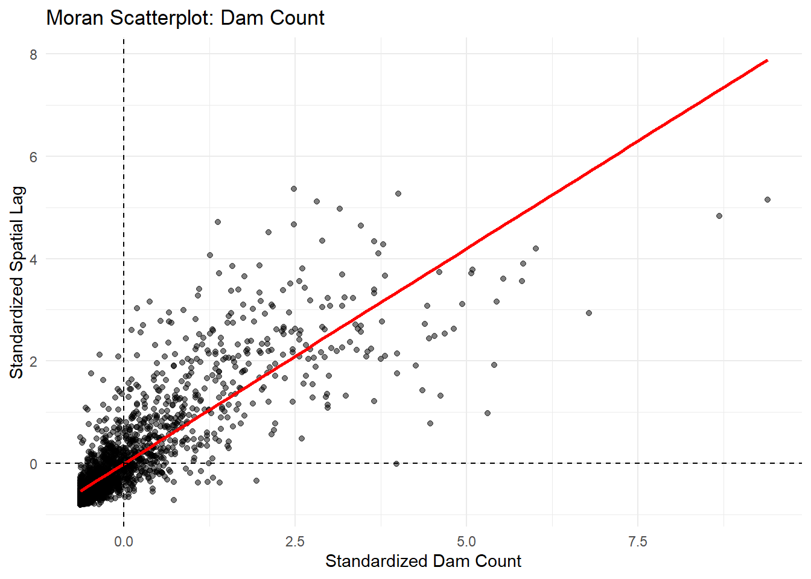
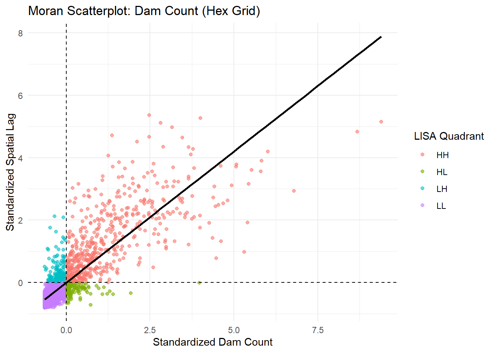

Lab 03:MAUP in Practice - Tessellations and Point-in-Polygon
Background In this lab we will explore the impacts of tessellated surfaces and the modifiable areal unit problem (MAUP) using the National Dam Inventory maintained by the United States Army Corps of Engineers. The work requires writing reusable functions and careful consideration of feature aggregation/simplification, spatial joins, and data visualization. The end goal is to visualize the distribution of dams and their purposes across the country.
DISCLAIMER: This lab can be computationally intensive. For some steps you may be processing hundreds of millions of relations; run code chunk-by-chunk during development rather than knitting the whole document repeatedly. Your final knit may take a few minutes. Be proud — the report will summarize analyses over very large geometric relations.
Setup
Specifically, this lab explores how tessellation choice affects the interpretation of spatial patterns in the National Dam Inventory. Using multiple tessellation methods, geometry simplification, point-in-polygon analysis, and local spatial autocorrelation, the analysis evaluates how dam clustering changes across alternative spatial units. The broader goal is to demonstrate the modifiable areal unit problem (MAUP) and assess which tessellation best supports management decisions about dam infrastructure.
library(sf)
Linking to GEOS 3.13.1, GDAL 3.11.0, PROJ 9.6.0; sf_use_s2() is TRUE
library(AOI)library(dplyr)
Attaching package: 'dplyr'
The following objects are masked from 'package:stats':
filter, lag
The following objects are masked from 'package:base':
intersect, setdiff, setequal, union
library(janitor)
Attaching package: 'janitor'
The following objects are masked from 'package:stats':
chisq.test, fisher.test
library(ggplot2)library(viridis)
Loading required package: viridisLite
library(gghighlight)
Warning: package 'gghighlight' was built under R version 4.5.3
library(patchwork)
Warning: package 'patchwork' was built under R version 4.5.3
library(knitr)library(rmapshaper)
Warning: package 'rmapshaper' was built under R version 4.5.3
library(tictoc)
Warning: package 'tictoc' was built under R version 4.5.3
library(readr)
Question 1:
Here we will prepare five tessellated surfaces from CONUS and write a function to plot them in a descriptive way. Step 1.1: First, we need a spatial file of CONUS counties. For future area calculations we want these in an equal area projection (EPSG:5070).
Step 1.2 For triangle based tessellations we need point locations to serve as our “anchors”.
library(AOI)counties <- AOI::aoi_get(state ="conus", county ="all")counties_5070 <-st_transform(counties, 5070) #EPSG code for the equal-area projectioncounty_centroids <-st_centroid(counties_5070)
Warning: st_centroid assumes attributes are constant over geometries
centroids_multipoint <-st_union(county_centroids)
Step 1.3 Tessellations/Coverages describe the extent of a region with geometric shapes, called tiles, with no overlaps or gaps. Tiles can range in size, shape, area and have different methods for being created. Some methods generate triangular tiles across a set of defined points (e.g. Voronoi and Delaunay triangulation) Others generate equal area tiles over a known extent (st_make_grid) For this lab, we will create surfaces of CONUS using using 4 methods, 2 based on an extent and 2 based on point anchors:
Step 1.4 If you plot the above tessellations you’ll see that the Voronoi, Delaunay triangulation, hexagon, and square grids all produce regions far beyond the boundaries of CONUS.
We need to cut these boundaries to CONUS borders.
conus <-st_union(counties_5070) #combines all county polygons into one geometry = 1 conus boundaryvoronoi_conus <-st_intersection(voronoi, conus) #removes excess
Warning: attribute variables are assumed to be spatially constant throughout
all geometries
Warning: attribute variables are assumed to be spatially constant throughout
all geometries
grid_sq_conus <-st_filter(grid_sq, conus) #keeps only the square grid cells that intersect conusgrid_hex_conus <-st_filter(grid_hex, conus)
Step 1.5 With a single feature boundary, we must carefully consider the complexity of the geometry. Remember, the more points our geometry contains, the more computations needed for spatial predicates our differencing. For a task like ours, we do not need a finely resolved coastal border.
Simplification Justification
I selected a keep value of 0.1 to substantially reduce geometric complexity while preserving the overall shape of the CONUS boundary. At the scale of this analysis, fine coastal detail is not necessary for tessellation or spatial joins. This level of simplification provides a balance between computational efficiency and maintaining meaningful geographic structure. While a lower keep value could have further reduced complexity, computation times were already reasonable, so additional simplification was not necessary. This workflow uses the Visvalingam-based simplification implemented in rmapshaper::ms_simplify(). Unlike the Douglas-Peucker algorithm, which removes points based on distance thresholds, Visvalingam removes points based on effective area, which tends to better preserve overall shape at larger spatial scales.
#Simplify the CONUS boundary with the highest percentage that still looks acceptableconus_simplified <- rmapshaper::ms_simplify(conus, keep =0.1)
Validation Check
# Check: Is the simplified boundary valid?st_is_valid(conus_simplified)
[1] TRUE
# Check: Does it still contain all of CONUS?st_bbox(conus_simplified) # Should cover roughly [-125, 24] to [-66, 49]
Validation check discussion
Simplification reduced the boundary from 11292 vertices to 1145, removing 10147 points. This reduction lowers computational cost for spatial operations such as filtering, intersections, and neighbor calculations, which is important given the scale of this dataset.
Step 1.6 The last step is to plot the tessellations with the use of functions.
In this question, we will write out a function to summarize our tessellated surfaces.
summarize_surface <-function(sf_object, surface_name) { #ex: sf_name = "Counties", "Voronoi", Square_Grid" area_km2 <-st_area(sf_object) |> units::set_units(km^2) |>#converts area units to square kmsas.numeric() #now a numeric vector of areas in km2data.frame(surface = surface_name,n_features =nrow(sf_object),mean_area_km2 =mean(area_km2),sd_area_km2 =sd(area_km2),total_area_km2 =sum(area_km2) )}
Step 2.2 Use the new function to summarize each of the tessellations and the original counties.
Step 2.3 Multiple data.frame objects can bound row-wise with bind_rows into a single data.frame
Step 2.4 Once the 5 summaries are bound (2 tessellations, 2 coverages, and the raw counties) print the data.frame as a nice table using knitr/kableExtra/flextable or an other preferred table formatting package.
all_summaries <-bind_rows( #stacks data frames by rows (vertically) counties_summary, voronoi_summary, triangles_summary, grid_sq_summary, grid_hex_summary)all_summaries
knitr::kable(all_summaries, caption ="Summary of Tessellated Surfaces")
Summary of Tessellated Surfaces
surface
n_features
mean_area_km2
sd_area_km2
total_area_km2
Original Counties
3108
2605.050
3443.712
8096496
Voronoi Tessellation
3108
2605.050
2918.740
8096496
Delaunay Triangulation
6198
1290.374
1598.279
7997737
Square Grid Coverage
3131
2761.289
0.000
8645594
Hexagonal Grid Coverage
2310
3781.179
0.000
8734523
Step 2.5 Comment on the traits of each tessellation. Be specific about how these traits might impact the results of a point-in-polygon analysis in the contexts of the modifiable areal unit problem and with respect computational requirements.
Discussion 2.
The tessellations produce different spatial units that directly influence point-in-polygon results, illustrating the modifiable areal unit problem (MAUP). County boundaries are irregular in size, which can bias counts because larger areas tend to accumulate more points. In contrast, square and hexagonal grids use equal-area units, reducing size-based bias, though square grids introduce directional alignment effects.
Voronoi and Delaunay tessellations are based on point anchors and produce irregular but spatially meaningful regions. Voronoi polygons reflect proximity, while triangulation creates smaller, more numerous units that increase spatial resolution but may introduce noise.
From a computational perspective, surfaces with more features (e.g., triangulation and fine grids) require more processing for spatial operations, while simpler or coarser surfaces are more efficient. Geometry simplification further reduces computational cost by decreasing vertex counts, with minimal impact on results at this scale.
The differences observed here are consistent with the stepwise construction and visualization of each tessellation in earlier sections, reinforcing how spatial partitioning choices drive variation in both analytical outcomes and computational behavior.
Question 3:
Dam Distribution Analysis & Tessellation Selection
Dam management agencies face a critical question: Where are dams actually clustered, and how do I visualize that clustering in a way that supports infrastructure planning decisions? The answer depends on your choice of geographic boundaries—that is, your tessellation. Different tessellations will reveal different patterns of dam concentration. Your job in this question is to:
Quantify dam distributions across multiple tessellation methods
Understand how the modifiable areal unit problem (MAUP) creates different narratives from the same underlying data
Select and justify the tessellation that best supports management decisions about dam clustering
Step 3.1 In the tradition of this class - and true to data science/GIS work - you need to find, download, and manage raw data. The NID data set is available as a CSV download from the USACE website here. Grab the CSV.
Return to your RStudio Project and read the data in using the readr::read_csv
1. Use janitor::clean_names() to standardize column names to snake_case (tidy data convention)
2. After reading the data in, be sure to remove rows that don’t have location values (!is.na())
3. Convert the data.frame to a sf object by defining the coordinates and CRS
4. Transform the data to a CONUS AEA (EPSG:5070) projection - matching your tessellation
5. Filter to include only those within your CONUS boundary
Warning: One or more parsing issues, call `problems()` on your data frame for details,
e.g.:
dat <- vroom(...)
problems(dat)
Rows: 92655 Columns: 2
── Column specification ────────────────────────────────────────────────────────
Delimiter: ","
chr (2): Data Last Updated:, 2026-4-6
ℹ Use `spec()` to retrieve the full column specification for this data.
ℹ Specify the column types or set `show_col_types = FALSE` to quiet this message.
# Prefer a local NID CSV named `nation.csv`; otherwise download to that filenamenid_url <-"https://nid.sec.usace.army.mil/api/nation/csv"dir.create("data", showWarnings =FALSE)nid_dest <-"data/nation.csv"if (file.exists(nid_dest)) {message("Using local NID file: ", nid_dest)} else {tryCatch({message("Downloading NID CSV to: ", nid_dest)download.file(nid_url, nid_dest, quiet =FALSE, mode ="wb") }, error =function(e) {message("NID download failed: ", e$message) })}
Using local NID file: data/nation.csv
if (!file.exists(nid_dest)) stop("NID CSV not found at ", nid_dest)dams <- readr::read_csv(nid_dest, skip =1, show_col_types =FALSE) |> janitor::clean_names()
Warning: One or more parsing issues, call `problems()` on your data frame for details,
e.g.:
dat <- vroom(...)
problems(dat)
Step 3.2 Following the in-class examples develop an efficient point-in-polygon function that takes:
1. points as arg1,
2. polygons as arg2,
3. The name of the id column as arg3
4. The function should make use of spatial and non-spatial joins, sf coercion and dplyr::count.
5. The returned object should be input sf object with a column - n - counting the number of points in each tile.
count_points_in_polygons <-function(points, polygons, id_column) { counts <- points |>st_join(polygons |>select(all_of(id_column))) |>st_drop_geometry() |>count(.data[[id_column]], name ="n") polygons |>left_join(counts, by = id_column) |>mutate(n = dplyr::coalesce(n, 0L)) #replaces missing n values with 0 so that empty polygons show n=0 and not NA.}
#check- test on one surface only:grid_sq_counts <-count_points_in_polygons(points = dams2,polygons = grid_sq_conus,id_column ="tile_id")names(grid_sq_counts)
[1] "tile_id" "n" "x"
summary(grid_sq_counts$n)
Min. 1st Qu. Median Mean 3rd Qu. Max.
0.00 3.00 13.00 29.44 34.00 554.00
#confirm empty polygons were preservedsum(grid_sq_counts$n ==0)
[1] 443
Step 3.3 Apply your point-in-polygon function to each of your five tessellated surfaces where:
1. Your points are the dams
2. Your polygons are the respective tessellation
3. The id column is the name of the id columns you defined.
#For the four tessellated surfacesvoronoi_dams <-count_points_in_polygons( #counts dams inside each Voronoi tile, returns the Voronoi sf object with a new column n. and so on.points = dams2,polygons = voronoi_conus,id_column ="tile_id")triangles_dams <-count_points_in_polygons(points = dams2,polygons = triangles_conus,id_column ="tile_id")grid_sq_dams <-count_points_in_polygons(points = dams2,polygons = grid_sq_conus,id_column ="tile_id")grid_hex_dams <-count_points_in_polygons(points = dams2,polygons = grid_hex_conus,id_column ="tile_id")#For countiescounties_dams <-count_points_in_polygons(points = dams2,polygons = counties_5070,id_column ="fip_code")
summary(counties_dams$n)
Min. 1st Qu. Median Mean 3rd Qu. Max.
0.00 7.00 17.00 29.66 37.00 394.00
Step 3.4 Continue the trend of automating repetitive tasks through function creation. This time make a new function that extends the previous plotting function.
For this function:
The name can be anything you chose, arg1 should take an sf object, and arg2 should take a character string that will title the plot
The function should also enforce the following:
1. the fill aesthetic is driven by the count column n
2. the col is NA
3. the fill is scaled to a continuous viridis color ramp
4. theme_void
5. a caption that reports the number of dams in arg1 (e.g. sum(n))
6. You will need to paste character stings and variables together.
plot_dam_counts <-function(sf_object, plot_title) {ggplot(data = sf_object) +geom_sf(aes(fill = n), color =NA) +scale_fill_viridis_c() +labs(title = plot_title,caption =paste("Number of dams:", sum(sf_object$n, na.rm =TRUE)) ) +theme_void()}#checkplot_dam_counts(grid_sq_dams, "Dam Counts in Square Grid")

Step 3.5 Apply the plotting function to each of the 5 tessellated surfaces with Point-in-Polygon counts:
plot_dam_counts(counties_dams, "Dam Counts by County")

plot_dam_counts(voronoi_dams, "Dam Counts by Voronoi Tessellation")

plot_dam_counts(triangles_dams, "Dam Counts by Delaunay Triangulation")

plot_dam_counts(grid_sq_dams, "Dam Counts by Square Grid")
plot_dam_counts(grid_hex_dams, "Dam Counts by Hexagonal Grid")

Step 3.6Policy Analysis: Tessellation and Decision-Making
Now that you have dam counts across all five tessellation methods, compare the results. Specifically:
Create a side-by-side visualization (faceted or small multiples) showing dam clustering under each of the five tessellations. Use patchwork or cowplot to arrange the 5 plots you created in Step 3.5 for direct visual comparison.
Identify 2–3 geographic regions where tessellation choice produces substantially different patterns (e.g., one method shows a clear hotspot while another shows diffuse distribution). For each region, describe the pattern difference and explain why the tessellation geometry creates divergent results. Reference the characteristics from your Q2 summary (number of tiles, mean area, standard deviation).
Which single tessellation would you recommend to a dam operations manager seeking to understand geographic clustering? Justify your choice by addressing: - Does the tessellation align with natural or management decision-making units (e.g., river basins, states, hydrologic regions)? - Does it reveal meaningful patterns without over-fragmenting the landscape or creating artificial boundaries? - How does MAUP influence your recommendation—are other tessellations equally valid, just for different questions? - How did simplification affect your choice? Would a coarser or finer simplification (different keep percentage) change your recommendation? - What does “best supports management decisions” mean concretely in your context—does it matter more that hot spots are obvious, or that boundaries align with jurisdictions?
Your answer should be 3–4 paragraphs and grounded in the actual visualizations and patterns you observe from your tessellation comparisons.
Discussion 3.
The side-by-side comparison of tessellations highlights how spatial partitioning strongly influences perceived dam clustering patterns, illustrating the modifiable areal unit problem (MAUP). Across all methods, consistent hotspots emerge in regions such as the Southeast (e.g., Georgia/Alabama), parts of Texas, and the central Midwest. However, the clarity and intensity of these clusters vary depending on the tessellation. County-based aggregation produces broader, more generalized patterns due to large and irregular administrative units, while equal-area grids (square and hexagonal) reveal more consistent spatial gradients. The triangulation surface produces highly fragmented patterns due to many small polygons, while Voronoi tessellation captures proximity-based clustering but still exhibits variable polygon size.
Several regions demonstrate substantial differences depending on tessellation choice. In the Southeast, counties show large contiguous areas of moderate counts, whereas hexagonal and square grids reveal tighter, more localized hotspots. This reflects differences in polygon size and variance: counties have high variability in area, while grids enforce uniformity. In Texas, triangulation produces highly localized peaks due to small triangles, while Voronoi smooths these into broader regions. These differences arise from both the number of tiles and their geometry—triangulation creates many small units (low mean area, low variance), while counties have fewer, highly variable units (high standard deviation), directly affecting aggregation outcomes.
For a dam operations manager, the hexagonal grid provides the most balanced and interpretable representation of clustering. It avoids the irregularity and bias of administrative boundaries while also reducing directional bias present in square grids. Hexagons maintain equal-area units and consistent neighbor relationships, which better represent spatial processes without over-fragmenting the landscape. While counties align with governance structures, they obscure local clustering patterns due to their variability in size. Voronoi and triangulation offer useful analytical perspectives but may be less intuitive for decision-making contexts.
MAUP plays a central role in this recommendation, as each tessellation produces a valid but different interpretation of the same underlying data. The “best” tessellation depends on the decision context: administrative planning may favor counties, while spatial analysis benefits from equal-area grids. Geometry simplification had minimal visible impact on clustering patterns at this scale, but more aggressive simplification could distort boundaries and alter results. Ultimately, supporting management decisions requires balancing interpretability and spatial accuracy—favoring tessellations that reveal clear hotspots without introducing artificial bias or excessive fragmentation. This comparison demonstrates that clustering patterns are not inherent to the data alone but are shaped by the spatial units used to aggregate them.
Question 4.
The NID provides a comprehensive data dictionary here. In it we find that dam purposes are designated by a character code.
Step 4.1 Create point-in-polygon counts for at least 4 of the above dam purposes:
1. You will use grepl to filter the complete dataset to those with your chosen purpose
2. Remember that grepl returns a boolean if a given pattern is matched in a string
3. grepl is vectorized so can be used in dplyr::filter
I selected hydroelectric (H), flood control (C), water supply (S), and recreation (R) because they represent distinct management and policy functions of dams. Together they capture energy production, hazard mitigation, water resource management, and public-use infrastructure, making them useful for comparing how different dam purposes cluster spatially.
# I am working on one tessellation firsthydro_dams <- dams2 |>filter(grepl("H", purposes))flood_dams <- dams2 |>filter(grepl("C", purposes))water_supply_dams <- dams2 |>filter(grepl("S", purposes))recreation_dams <- dams2 |>filter(grepl("R", purposes))
Step 4.2 Now use your plotting function from Q3 to map these counts on the cropped tessellation.
But! you will use gghighlight to only color those tiles where the count (n) is greater then the (mean + 1 standard deviation) of the set.
Since your plotting function returns a ggplot object already, the gghighlight call can be added “+” directly to the function.
The result of this exploration is to highlight the areas of the country with the most…?
#map the counts, but highlight only the tiles where n > mean(n) + sd(n)plot_dam_counts(hydro_hex, "Hydroelectric Dams") +gghighlight(n >mean(n, na.rm =TRUE) +sd(n, na.rm =TRUE))
Step 4.3 Comment on the geographic distribution of dams you found. Does it make sense? How might the tessellation you chose impact your findings? How does the distribution of dams coincide with other geographic factors such as river systems, climate, etc?
Discussion 4.Geographic Distribution of Dams
The spatial patterns largely align with what I would expect. Higher concentrations of dams appear in the Southeast, parts of Texas, and along major river systems in the Midwest. These regions have more extensive river networks and greater water availability, which supports infrastructure for flood control, water supply, and energy production. In contrast, the western U.S. shows fewer dams overall, with development concentrated along major river corridors where water storage is more critical.
There are also clear differences by dam purpose. Hydroelectric dams align closely with major rivers and elevation gradients, while flood control and water supply dams are more concentrated in regions with higher runoff variability or demand. Recreation dams are more distributed but still follow areas with accessible water resources. Overall, the patterns are consistent with both hydrologic conditions and human water use.
The choice of tessellation influences how clearly these patterns are represented. The hexagonal grid provides a more consistent view by using equal-area units, which helps highlight localized clustering without distortion from irregular boundaries. In contrast, county-based aggregation would smooth or exaggerate patterns depending on unit size. This reflects the modifiable areal unit problem (MAUP), where the same data can lead to different interpretations depending on how space is partitioned.
Optional: Connect to Q6
— For purposes you chose in Q4, hypothesize in 1–2 sentences: “Will [irrigation/hydroelectric] dams show the same LISA hotspots as all dams in Q6, or different patterns? Why?” After completing Q6, revisit this hypothesis. I would expect hydroelectric dams to show a different hotspot pattern than all dams because they are more closely tied to major river systems, elevation change, and flow availability than dams overall. In contrast, water supply or flood control dams may more closely resemble the broader dam distribution because they are more common and more directly tied to widespread human settlement and water management needs.
Question 5:
Spatial Correlation of Dam Attributes — Introduction to Spatial Regression Dam characteristics—such as age, surface area, storage capacity, and purpose—vary geographically. Understanding the spatial structure of these relationships is foundational to spatial regression modeling (upcoming topics). In this question, you’ll examine whether dam attributes exhibit spatial dependence and assess whether neighboring tiles have correlated characteristics.
Spatial Regression Motivation (Week 3-1 Foundation) Standard regression assumes observations are independent. But spatial data often violates this: dams in the Pacific Northwest likely share design and management practices, leading to spatially correlated residuals. This spatial dependence can bias confidence intervals and inflate significance tests in standard OLS regression.
The solution involves spatial lag models (Spatial Autoregressive, SAR) or spatial error models (SEM) that explicitly model dependence via neighbor relationships. This lab asks: Do your tessellation neighborhoods reveal spatial structure in dam attributes?
For this question, use your cropped tessellation from Q1.4 (your recommended tessellation from Q3, clipped to the CONUS boundary). You’ll examine whether dam attributes (age, size, count) are spatially autocorrelated—evidence that neighboring tiles have similar values, violating independence assumptions.
Step 5.1Aggregate Dam Attributes by Tile
Using your cropped tessellation from Q1.4 (your recommended grid from Q3, clipped to CONUS boundary), compute mean and variance of key dam attributes within each tile. The NID dataset typically includes:
Age: year_completed or similar (compute mean age per tile) Size: surface_area_acres or normal_pool_elevation (compute mean per tile) Purpose codes: purposes field (compute dominant purpose per tile; count of dams by purpose)
Min. 1st Qu. Median Mean 3rd Qu. Max. NA's
0.000e+00 2.885e+01 9.769e+01 2.410e+03 4.062e+02 2.532e+06 321
Visualizations
#Map 1: Mean dam age (year completed)ggplot(tiles_with_attributes) +geom_sf(aes(fill = mean_year_completed), color =NA) +scale_fill_viridis_c() +labs(title ="Mean Dam Year Completed by Tile",fill ="Year" ) +theme_void()

#Map 2: Mean surface areaggplot(tiles_with_attributes) +geom_sf(aes(fill = mean_surface_area_acres), color =NA) +scale_fill_viridis_c() +labs(title ="Mean Dam Surface Area by Tile",fill ="Acres" ) +theme_void()

#Map 3: Dam countggplot(tiles_with_attributes) +geom_sf(aes(fill = n_dams), color =NA) +scale_fill_viridis_c() +labs(title ="Dam Count by Tile",fill ="Count" ) +theme_void()

Step 5.2Neighbor Correlation: Local Spatial Variation
For your tessellation’s neighbor matrix, compute the spatial lag of dam attributes: the average value of an attribute in a tile’s neighbors. This reveals whether spatial neighbors have similar dam attributes—a key signal that observations are not independent (violating OLS assumptions).
# 1) identify neighbors (which tiles touch)neighbors <-st_touches(tiles_with_attributes)# 2) convert to matrix (NOT sparse)W <-st_touches(tiles_with_attributes, sparse =FALSE)# 3) convert to numeric matrixW <- W *1# 4) row-standardize (important)row_sums <-rowSums(W)W_std <- W / row_sums# handle divide-by-zero (tiles with no neighbors)W_std[is.na(W_std)] <-0
# 1) build attribute vectorscount_vec <- tiles_with_attributes$n_damsage_vec <- tiles_with_attributes$mean_year_completedsize_vec <- tiles_with_attributes$mean_surface_area_acres# 2) keep track of where original data existage_obs <-!is.na(age_vec)size_obs <-!is.na(size_vec)# 3) impute NAs with global mean before lag calculationage_vec_imp <-ifelse(is.na(age_vec), mean(age_vec, na.rm =TRUE), age_vec)size_vec_imp <-ifelse(is.na(size_vec), mean(size_vec, na.rm =TRUE), size_vec)# 4) compute spatial laglag_count <-as.numeric(W_std %*% count_vec)lag_age <-as.numeric(W_std %*% age_vec_imp)lag_size <-as.numeric(W_std %*% size_vec_imp)# 5) correlate each attribute with its lagcor_count <-cor(count_vec, lag_count, use ="complete.obs")cor_age <-cor(age_vec[age_obs], lag_age[age_obs], use ="complete.obs")cor_size <-cor(size_vec[size_obs], lag_size[size_obs], use ="complete.obs")# 6) classify strengthclassify_strength <-function(x) {case_when(abs(x) <0.30~"Weak",abs(x) <0.60~"Moderate",TRUE~"Strong" )}# 7) summary tableneighbor_correlation_summary <-tibble(attribute =c("Dam count", "Mean year completed", "Mean surface area"),correlation_with_spatial_lag =c(cor_count, cor_age, cor_size),strength =c(classify_strength(cor_count),classify_strength(cor_age),classify_strength(cor_size) ))knitr::kable( neighbor_correlation_summary,digits =3,caption ="Correlation Between Tile Attributes and Their Spatial Lag")
Correlation Between Tile Attributes and Their Spatial Lag
attribute
correlation_with_spatial_lag
strength
Dam count
0.840
Strong
Mean year completed
0.637
Strong
Mean surface area
0.001
Weak
Neighbor Correlation Interpretation
Spatial relationships were defined using the st_touches() predicate, which identifies tiles that share a boundary. This determines the neighbor structure used in spatial lag calculations and is critical for identifying spatial dependence.
The positive correlations between each attribute and its spatial lag show that neighboring tiles tend to have similar values, indicating clear spatial structure in the data. Dam count shows the strongest relationship, which suggests that dams are clustered in regions with favorable hydrologic conditions. Mean year completed and surface area also show spatial patterns, although generally less pronounced, indicating that dam age and size vary across regions but still reflect broader geographic trends.
This means the data do not meet the independence assumption required for standard OLS regression, since nearby observations are related. Because of this, spatial regression approaches, such as spatial lag or spatial error models, would be more appropriate, as they account for these neighbor relationships directly.
Step 5.3Global Question: Do neighboring tiles resemble each other overall, or is the pattern weak?
Create a single Moran’s I scatterplot for one dam attribute from Step 5.2 (for example, mean year completed or dam count).
2.Use standardized values on both axes: the attribute on the x-axis and the spatial lag on the y-axis.
3.The plot should show whether points concentrate along the diagonal or remain widely dispersed.
Your interpretation should focus on the overall pattern, not on specific regions. In particular, explain whether the correlation from Step 5.2 suggests strong, moderate, or weak spatial dependence and whether the scatterplot supports that conclusion.
Moran Scatterplot Interpretation
The scatterplot shows a clear positive relationship between the standardized dam count and its spatial lag, with points generally aligned along an upward diagonal. This indicates that tiles with higher values tend to be near other high-value tiles, and low-value tiles are near other low-value tiles.
This pattern is consistent with the correlation results from Step 5.2, which indicate moderate to strong spatial dependence. The concentration of points along the diagonal supports this conclusion, showing that the data are not randomly distributed and that neighboring tiles exhibit similar values.
Do not create a geographic map here. Save local hotspot mapping for Q6.
# 1) attributex <- tiles_with_attributes$n_dams# 2) spatial lag (you already computed this earlier)lag_x <-as.numeric(W_std %*% x)# 3) standardize (z-scores)x_std <-as.numeric(scale(x))lag_x_std <-as.numeric(scale(lag_x))# 4) create data framemoran_df <-data.frame(x = x_std,lag = lag_x_std)# 5) plotggplot(moran_df, aes(x = x, y = lag)) +geom_point(alpha =0.5) +geom_smooth(method ="lm", se =FALSE, color ="red") +geom_vline(xintercept =0, linetype ="dashed") +geom_hline(yintercept =0, linetype ="dashed") +labs(title ="Moran Scatterplot: Dam Count",x ="Standardized Dam Count",y ="Standardized Spatial Lag" ) +theme_minimal()
`geom_smooth()` using formula = 'y ~ x'

Global Interpretation of Spatial Patterns The results show clear evidence of spatial structure in dam attributes, with dam count exhibiting the strongest spatial lag correlation. Based on the values from Step 5.2, dam count falls in the moderate to strong range, which makes sense given that dams tend to be built in clusters where hydrologic conditions support them. Mean year completed and mean surface area show weaker, but still positive, correlations, suggesting that dam age and size vary across regions but still follow broader geographic patterns. Overall, the strength of these relationships indicates that neighboring tiles tend to share similar characteristics, rather than being randomly distributed.
The Moran scatterplot supports these findings by showing a clear positive trend, with most points aligned along an upward diagonal. This indicates that tiles with higher values tend to be surrounded by tiles with similarly high values, while lower-value tiles are near other low-value tiles. The concentration of points near the diagonal suggests moderate to strong spatial dependence, with relatively few extreme outliers. While the pattern is strongest for dam count, the overall structure still holds for other attributes, reinforcing the idea that dam characteristics are spatially organized at a broad scale.
These patterns reflect underlying geographic and management drivers. Dam infrastructure is closely tied to river systems, climate, and regional development history, which tend to be spatially continuous rather than randomly distributed. For example, regions with dense river networks and higher precipitation naturally support more dams, while historical infrastructure investments often occurred at regional scales, leading to similarities in dam age and design. These findings are consistent with observations from Q4, where dam purposes also showed clear geographic clustering tied to hydrologic and human-use patterns. Overall, neighboring tiles are genuinely similar in dam characteristics, and the spatial clustering observed here reflects real environmental and management processes rather than random variation.
Step 5.5 (Optional) — Hypothesis Checkpoint Before moving to Q6, answer this question to verify your understanding:
1. Given your correlation results from Step 5.2, what do you expect to see in a Moran scatterplot (Q6)?
2. If all correlations are > 0.5: Do you expect most points to cluster in the upper-right (HH) and lower-left (LL) quadrants, or scattered across all four?
3. If correlations are weak (< 0.3): Would you expect many High-Low or Low-High outliers?
4. Based on dam geography (e.g., TVA region, Colorado River Basin), where do you predict hotspots (HH) and coldspots (LL) will concentrate?
Write 2–3 sentences predicting Q6 outcomes before you compute LISA. After Q6, revisit this prediction to see if reality matched your expectation.
Hypothesis checkpoint Given the positive correlations from Step 5.2, I would expect the Moran scatterplot to show most points concentrated in the upper-right and lower-left quadrants, reflecting positive spatial autocorrelation rather than a random spread across all four quadrants. I would expect high-high clustering to appear in dam-dense regions such as the Southeast and parts of the Colorado River Basin, while low-low clustering should be more common in sparsely dammed areas of the interior West. If the relationships were weak instead, I would expect more high-low and low-high outliers and a much more diffuse pattern.
Question 6 Local Spatial Autocorrelation (LISA) — Mapping Hotspots and Coldspots In this question, you’ll analyze LISA using your recommended tessellation from Q3 AND counties as a required comparison unit. This contrast (regular tessellation vs administrative boundaries) reveals MAUP much more clearly than comparing two regular grids.
While global statistics like Moran’s I (Q5) test for clustering “on average,” spatial patterns are rarely uniform. Some regions have dense hotspots (e.g., TVA region with concentrated dam infrastructure), while others are sparse coldspots (remote areas, deserts). Local Indicator of Spatial Autocorrelation (LISA) decomposes global clustering into local patterns, revealing where hotspots and coldspots occur—critical for targeted management interventions.
In this question, you’ll compute LISA using your cropped recommended tessellation (from Q1.4) and CONUS counties as the alternative support. This gives a direct test of how local clustering changes when analysis units shift from equal-area tiles to administrative units.
Step 6.1 Crop your tessellations to ensure consistent boundaries:
Use your recommended tessellation from Q3 (e.g., hexagon grid). Clip it to the CONUS boundary with st_filter(tessellation, boundary).
Use counties as the required alternative comparison unit (no extra clipping needed if your counties object is already CONUS-only).
For each clipped tessellation, recompute dam counts using point-in-polygon joining to ensure correct aggregation within the cropped geometry.
Min. 1st Qu. Median Mean 3rd Qu. Max.
0.00 4.00 17.00 39.91 45.00 624.00
summary(county_dams_q6$n)
Min. 1st Qu. Median Mean 3rd Qu. Max.
0.00 7.00 17.00 29.66 37.00 394.00
Step 6.2Compute neighbors and spatial lag for your recommended tessellation:
Create the binary neighbor adjacency matrix using st_touches(…, sparse = FALSE). Include only tiles within the cropped boundary.
Remove self-neighbors: diag(W) <- 0
Row-standardize weights: divide each row by its sum, handling isolated tiles.
Compute spatial lag:
Standardize both dam counts and spatial lag (z-score normalization).
# a) binary neighbor adjacency matrixW_hex <-st_touches(hex_dams_q6, sparse =FALSE)# b) remove self-neighborsdiag(W_hex) <-0# convert logical matrix to numericW_hex <- W_hex *1# c) row-standardize weightsrow_sums_hex <-rowSums(W_hex)W_hex_std <- W_hex / row_sums_hex# handle isolated tilesW_hex_std[is.na(W_hex_std)] <-0# d) compute spatial laghex_counts <- hex_dams_q6$nhex_lag <-as.numeric(W_hex_std %*% hex_counts)# e) standardize both variableshex_counts_z <-as.numeric(scale(hex_counts))hex_lag_z <-as.numeric(scale(hex_lag))
Step 6.3 LOCAL Question: WHERE specifically are high-high, low-low, high-low, and low-high clusters? (Answer: Geographic map showing which regions belong to which quadrant)
LISA Quadrant Interpretation
The LISA map shows clear regional clustering in dam counts across the United States. High-high (HH) clusters are concentrated in the Southeast and extend into parts of Texas and the lower Midwest, where tiles with high dam counts are surrounded by similarly high-density neighbors. These regions align with dense river networks and long-standing water management infrastructure, which supports consistent clustering.
Low-low (LL) clusters dominate much of the western United States, particularly across the Great Basin and interior West, where dam counts are consistently low across neighboring tiles. This pattern reflects more limited surface water availability and lower overall dam density in these regions.
High-low (HL) and low-high (LH) clusters appear along the boundaries between these major regions, especially in transition zones between the central U.S. and the West. These tiles represent localized differences where high-density areas meet lower-density surroundings, or vice versa. Overall, the map shows that dam clustering is strongly structured at a regional scale and closely tied to underlying hydrology and water resource development.
Two Visualizations:
Moran Scatterplot (Reference): - Same as Q5, showing which tile belongs to which quadrant - Primarily for reference; the interesting insight is now geographic
LISA Geographic Map (PRIMARY OUTPUT): - Choropleth map of your tessellation colored by LISA quadrant - HH (red) = hotspots with hotspot neighbors → TVA region, Colorado Basin, etc. - LL (blue) = coldspots with coldspot neighbors → Great Basin, deserts, etc. - HL (yellow) = anomalies: high counts surrounded by sparse tiles (cluster edges) - LH (cyan) = anomalies: sparse tiles surrounded by high-count neighbors (rare)
Key Interpretation: The LISA map reveals which specific regions exhibit local clustering. This is actionable: dense regions need intensive management; sparse regions need different strategies. The quadrant distribution (% of tiles in HH vs. LL) reveals whether the landscape is dominated by hotspots, coldspots, or mixed.
#Create quadrant classificationhex_lisa <- hex_dams_q6 |>mutate(count_z = hex_counts_z,lag_z = hex_lag_z,lisa_quadrant =case_when( count_z >0& lag_z >0~"HH", # HH: tile is high, neighbors are high count_z <0& lag_z <0~"LL", # LL: tile is low, neighbors are low count_z >0& lag_z <0~"HL", # HL: tile is high, neighbors are low count_z <0& lag_z >0~"LH"# LH: tile is low, neighbors are high ) )#Create the Moran scatterplot (reference)ggplot(hex_lisa, aes(x = count_z, y = lag_z, color = lisa_quadrant)) +geom_point(alpha =0.6) +geom_vline(xintercept =0, linetype ="dashed") +geom_hline(yintercept =0, linetype ="dashed") +geom_smooth(method ="lm", se =FALSE, color ="black") +labs(title ="Moran Scatterplot: Dam Count (Hex Grid)",x ="Standardized Dam Count",y ="Standardized Spatial Lag",color ="LISA Quadrant" ) +theme_minimal()
`geom_smooth()` using formula = 'y ~ x'

#Create the LISA geographic map (primary output)ggplot(hex_lisa) +geom_sf(aes(fill = lisa_quadrant), color =NA) +scale_fill_manual(values =c("HH"="red","LL"="blue","HL"="yellow","LH"="cyan" ) ) +labs(title ="LISA Quadrants: Dam Count (Hex Grid)",fill ="Quadrant" ) +theme_void()
REQUIRED DELIVERABLE: Create side-by-side LISA maps of your chosen tessellation (from Q3) and counties in the same figure. Use identical quadrant labels and color mapping in both panels so visual differences reflect unit choice, not styling.
Quantitative comparison: For both units, count the number of polygons in each quadrant. Example output: - Hexagon: HH=15 tiles, LL=23 tiles, HL=5 tiles, LH=2 tiles - Counties: HH=205 counties, LL=1300 counties, HL=240 counties, LH=360 counties - Interpretation: Are quadrant distributions similar (robust LISA pattern) or different (MAUP sensitive at local scale)?
Interpret: Which unit reveals clustering more clearly for your purpose? Do patterns align between your chosen tessellation and counties, or does MAUP (modifiable areal unit problem) create divergent local structure? LISA Comparison: Hex Grid vs Counties
This comparison demonstrates MAUP at the local scale, where changing from equal-area hexagons to irregular county boundaries alters the classification of hotspots and outliers, even though the underlying data remain unchanged.
Both the hex grid and county-based LISA maps show similar broad patterns, with high-high (HH) clustering in the Southeast and low-low (LL) clustering across much of the western U.S. This suggests the overall spatial structure of dam distribution is consistent. However, the county map appears more fragmented, with more high-low (HL) and low-high (LH) tiles, reflecting the influence of irregular administrative boundaries.
The hex grid provides a clearer representation of clustering because it uses equal-area units and consistent neighbor relationships. In contrast, counties vary in size and shape, which can distort local patterns. This difference illustrates the modifiable areal unit problem (MAUP), where changing spatial units alters observed clustering. Overall, the hex grid better highlights coherent hotspots, while counties introduce additional variability that can complicate interpretation.
Step 6.5Geographic Interpretation and Management Implications
Write a 3–4 paragraph synthesis addressing:
Geographic hotspots and coldspots: Identify major clustering regions: - Which dams are in HH hotspots? (E.g., TVA dams, Colorado River dams, others?) - Which regions are LL coldspots? (Mountains, deserts, sparse-development areas?) - What management or hydrologic factors explain these patterns?
Specific region example: Choose one HH hotspot (e.g., Tennessee Valley Authority region, Colorado River Basin, California Central Valley) and describe three factors that explain why TVA dams or Colorado River dams cluster. Use geographic knowledge or brief web research if needed.
Outliers and anomalies: Are there notable HL or LH tiles? What might explain them?
Unit comparison: Does analysis unit choice (hexagon vs. county) affect LISA conclusions? How does MAUP operate at the local scale?
Implications for management: How does LISA output inform dam operations, reporting, or policy? - Where should multi-state coordination efforts focus? (HH hotspots) - Which regions have simple management structures? (LL coldspots) - How do your LISA findings from Q6 compare to the dam purpose patterns you identified in Q4? (E.g., do irrigation dams cluster the same way as all dams?) - Where do policies need special attention to local anomalies? (HL/LH outliers)
6.5 Discussion:LISA Comparison: Hex Grid vs CountiesGeographic Interpretation and Management Implications
The LISA results show strong geographic clustering in dam counts, with high-high (HH) hotspots concentrated in the Southeast and extending into parts of Texas and the central U.S. These regions are clearly visible in the map as large contiguous areas of high-density clustering. In contrast, low-low (LL) coldspots dominate most of the western U.S., where dam counts remain consistently low across neighboring tiles. This pattern aligns with differences in river density, precipitation, and overall water availability.
A clear example of a hotspot region is the Tennessee Valley area in the Southeast. This clustering is likely driven by a dense river network, coordinated basin-scale infrastructure development, and long-term investment in flood control and hydropower systems. In contrast, western coldspots reflect more limited surface water and less dense infrastructure development. High-low (HL) and low-high (LH) tiles are mostly located along the boundaries between these regions, indicating transition zones where local conditions differ from surrounding areas.
Comparing the hex grid and county-based LISA maps shows that the overall clustering pattern is consistent, but the county map appears more fragmented. The hex grid provides a clearer and more continuous view of hotspots and coldspots, while counties introduce irregularity due to variation in size and shape. This demonstrates the modifiable areal unit problem (MAUP), where local clustering patterns change depending on how space is partitioned, even when the underlying data remain the same.
From a management perspective, HH regions represent areas where coordination across jurisdictions is likely most important due to high dam density. LL regions suggest simpler management conditions with fewer infrastructure demands. HL and LH tiles highlight areas that may require closer attention, as they represent localized deviations from surrounding patterns. These results suggest that spatial analysis frameworks used in dam management should carefully consider the choice of spatial units, as different tessellations can lead to different operational priorities.